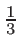

Wstecz: 12.6 Funkcje operujące na W górę: 12. Zarządzanie pamięcią Dalej: 13. C-struktury i unie
Za pomocą operatora new można przydzielić pamięc o z góry określonej lokalizacji. Istnieje do tego celu specjalna forma operatora new — dostępna po dołączeniu pliku nagłówkowego new — o następującej składni:
new (adres) Typ;
new (adres) Typ[wymiar];
W ten sposób przydzielamy na pojedynczy obiekt lub tablicę
obszar pamięci rozpoczynający się od adresu będącego wartością
wyrażenia
adres. W zasadzie obszar ten powinien mieścić
się w jakimś obszarze pamięci przydzielonym wcześniej za pomocą
„zwykłego”
new.
Jest to operacja szybka, ponieważ tak naprawdę nie wymaga
alokowania pamięci; kompilator zakłada, że programista wie co robi.
Ponieważ tak naprawdę przydziału pamięci nie ma, obszar ten
powinien zostać zwolniony przez wywołanie
delete
ze wskaźnikiem takiego typu i zawierającym ten adres, który był
użyty w „prawdziwym”
new, a nie w
new
lokalizującym!
W poniższym przykładzie alokujemy tablicę
itab
liczb typu
int, a potem, wewnątrz obszaru pamięci przez nią zajmowanego,
tablicę
dtab
liczb typu
double:
1. #include <iostream>
2. #include <new>
3. using namespace std;
4.
5. int main() {
6. int* itab = new int[8];
7. for (int i = 0; i < 8; i++) itab[i] = i+1;
8.
9. double* dtab = new (itab+2) double[2]; ➊
10. for (int i = 0; i < 2; i++) dtab[i] = (1+i)/3.;
11.
12. cout << "\nTablica dtab:\n\n";
13. for (int i = 0; i < 2; i++)
14. cout << " dtab[" << i << "] = " << dtab[i] << endl;
15.
16. cout << "\nTablica itab:\n" << endl;
17. for (int i = 0; i < 8; i++)
18. cout << " itab[" << i << "] = " << itab[i] << endl;
19.
20. delete [] itab;
21. }
Najpierw alokujemy tablicę 8 liczb całkowitych i wypełniamy ją kolejnymi liczbami od 1 do 8. Tablica zajmuje 8×4 = 32 bajty. W linii ➊ pod adresem trzeciego elementu tej tablicy „alokujemy” tablicę dwóch liczb typu double i inicjujemy ją wartościami oraz . Ta tablica zajmuje 2×8 = 16 bajtów. Teraz w pamięci pod adresem wskazywanym przez itab umieszczone są najpierw dwie liczby całkowite (w sumie 8 bajtów), następnie dwie liczby rzeczywiste (16 bajtów) i znów dwie liczby całkowite (8 bajtów). Że tak jest rzeczywiście, przekonuje nas wydruk tego programu:
Tablica dtab:
dtab[0] = 0.333333
dtab[1] = 0.666667
Tablica itab:
itab[0] = 1
itab[1] = 2
itab[2] = 1431655765
itab[3] = 1070945621
itab[4] = 1431655765
itab[5] = 1071994197
itab[6] = 7
itab[7] = 8
Widać, że rzeczywiście tablice te zajmują
ten sam obszar w pamięci. Dwie liczby typu
double
„zamazały” cztery liczby całkowite, pozostawiając jednak
dwa pierwsze i dwa ostatnie elementy tablicy
itab
nienaruszone.
Opisany rodzaj przydzielania pamięci stosuje się często aby wykorzystać na nowe dane wcześniej zaalokowane a już niepotrzebne obszary pamięci — jest to znacznie szybsze niż zwalnianie i potem przydzielanie pamięci od nowa.
T.R. Werner, 28 września 2018; 23:31